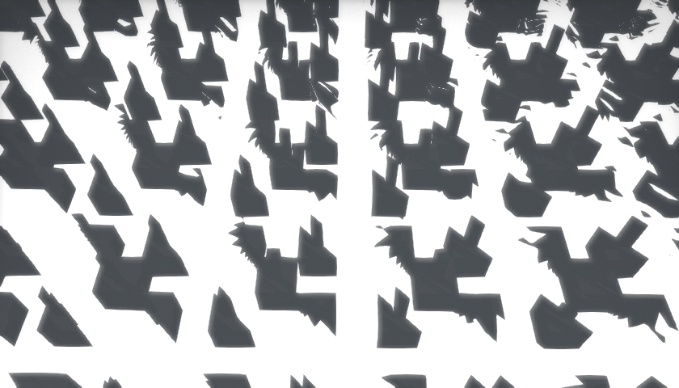
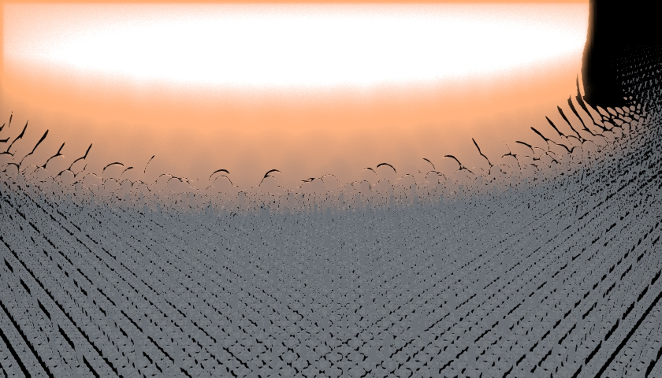
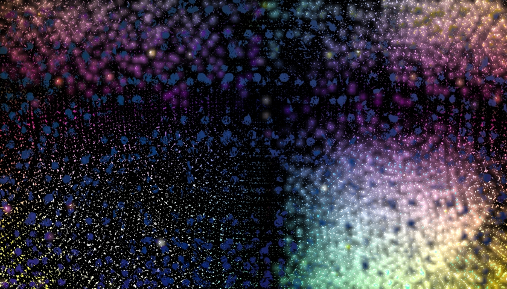
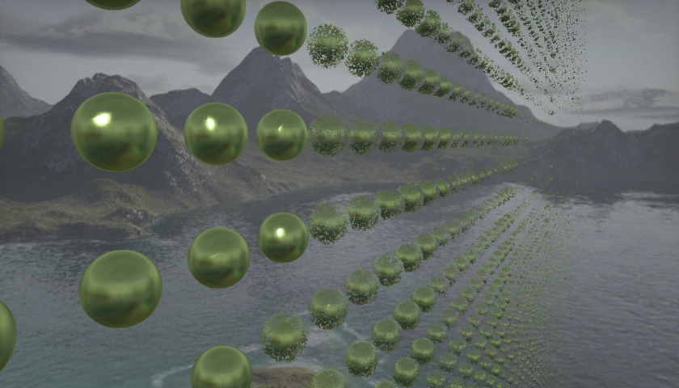
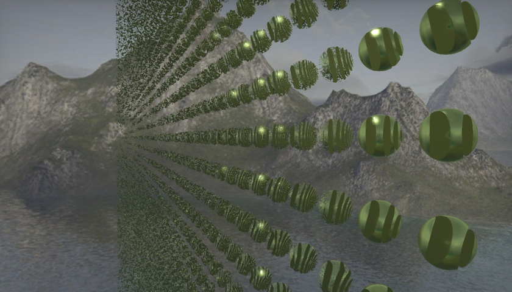
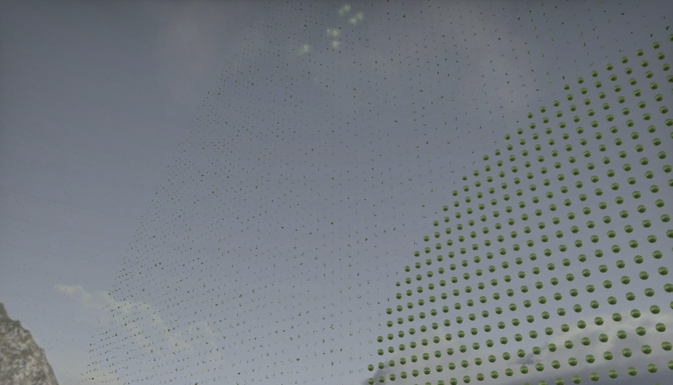

|
GPUProgramming
|
Newest entries are at the top
I talked with you this morning and got insight on how I might move forward to make the program run faster. I removed all if statements at the cost of having the "random" building behavior that I had gotten before. I then switched to a separate random number generator that only created 1 or 0 to either disable or enable certain building extensions. Unfortunately, I get strange behavior at the "bounds" of different modulo sections:
|  |
| Issue with modulo |
Unfortunately I was never able to resolve this issue. Instead, keeping in mind that my end goal was to have a city with plausible variation, I tried to get that same effect by having different modulo steps. The input point is moduloed by several different mod values. When that point is then used in different distance estimators, those objects all appear every mod by mod step in the world space. This process is explained in much more detail in the report.
Now that I was able to get different objects to appear at different positions in world space by using the mod operator I began to create different building objects. I created a set of generic building methods. These methods took in the p ray marcher position, a c local position, and a d dimensions specifier. These building methods would then create towers or office buildings or smokestacks.
I then had a set of other builder methods that used those generic building methods. These methods hard coded in the c and d inputs. They were then incorporated into the scene distance estimator.
Lastly, I made the getNormal equation actually return the proper normal value. Before it was evaluating a box distance estimator for normals which resulted in poor visual quality. Unfortunately, adding in the proper normal equation (ie. evaluating the actual distance estimator function) made each shader reload take on average 3 minutes to load.
I really really really wanted to incorporate what I had made before with the exploding color ball. That desire made me wonder what sMin might look like if expanded over the city. I added in a sphere and sMinned it with the city. The result was really cool and looked a lot like a nuclear explosion.
|  |
| "The original explosion" |
At this point I had to make a stylistic choice between the cartoony look of having non reflective surfaces on the city and the alternate look of having a reflective city. I was leaning towards the cartoony look but didn't like how poorly defined the city was as a result. I asked some of the people in lab and they recommended that I go with the reflective look.
| "The new explosion" |
At this point I began to make the movie. As mentioned in the report I started with the basic idea that there should be a progression from city to nuclear shots. That idea motivated the shots I took. With the music I got from Devon's help I stitched and cut the shots in iMovie. For more details see the report.
I was able to incorporate the color ball exploding thing I created for the credit! :)
Realized that my epsilon value was too high and reduced it. I now get long view distances and my short view distance no longer has the weird behavior shown below:
 |
| This happens when all the constants are right except for epsilon when calculating surface normals |
I then moved on to the final scene. I was curious with twists and got some interesting results like below:
▶ Play Video |
| Twisty |
I also tried relating the mod function to the ray's P position and got some really cool behavior when I added an additional time variable and related P position to color:
▶ Play Video |
| :) |
▶ Play Video |
| :) |
▶ Play Video |
| :) |
▶ Play Video |
| :) |
|  |
| :) |
| :) |
These were all by chance so I focused on making a physical object. I wanted to make a repeating city with modulo, but to have the city have variation. I had a lot of difficulty just trying to get certain objects to appear every n steps and another object to appear every k steps, I tried doing modulo on the actual P value given to the distance estimator but that resulted in strange behavior. In the end, I switched to rudimentary binning, where I divided the entire world space into 15x15 bins. Then every third or second bin I would do something special. This behavior worked and I extended it to tree expansions, whereby a given box created in a certain bin could extend out to different objects like a chimney or a roof. For example, I would have a function eb1 that evaluated to a box. This function would take in the ray's position but would also take in a c value for its position (relative to modulo offsets) and a d value that woudl specify its height and width properties. It then ran an if statement based on a random math function. If the math function's return value was greater than 0.5 it would evalute a box function but also evalute a chimney function as well, else it would not generate anything at all. The idea here was that different boxes would have chimneys or windows, etc. and by having a d value that was passed to each function, I could change the size of the buildings. By having a sort of pseudo tree expansion behavior for the building, I was hoping to have a huge variety of buildings. The random function was a function of world position. Unfortunately this all used a lot of if statements which resulted in very very slow performance. This approach was probably most suited for non GPU programs. Perhaps this approach can be reused for the midterm.
Began to adapt my implicit surface renderer to have proper materials. I thought that we had to calculate normals manually per shape before realizing that you had posted the equation online. Unfortunately, the equation had errors so we had to readapt it to make it work. Matt was able to get his version working and he shared the corrected equation with us so that we could move forward. At the end of this period I had a working renderer. I also spent a large amount of time trying to weak the values of epsilon, closeEnough, and the distance estimator to get proper behavior on materials. Below, some screenshots of the weird behavior I saw.
When the sceneDistance is not divided by two weird behavior results.
|  |
| view right - weird behavior |
|  |
| view left - more weird behavior |
When you divide scene distance by 2 and decrease closeEnough, behavior is better, but zooming out results in clear limits to view distance.
|  |
| :( |
Lastly, I decided to change the structure of my code. Intead of using separate instances to structs to render each object on the screen, I switched to having all of the objects being rendered from a single interesect method.
Learned that trace-analytic contains almost all of the code needed for the rendering portion of this lab. I tried to adapt it by copying over methods, unfortunately I still didn't really know what was going on so I was wasting more time than I should have. In the end I was getting partial behavior so I restarted took another look at the code and realized that I only needed to change the intersect method called from the sphere.glsl file to get the behavior that I wanted. I copied the trace-analystic and redid the sphere.glsl intersect method. Unfortunately, the constants, closeEnough, and the distance estimator were off resulting in strange image behavior such as clipping and point cloud objects.
Completed the pixel grid portion of the pre lab. Implemented the modulo operator on the sphere distance estimator I had created. Did all of this in a separate .pix file.
My code:
 1.8.7
1.8.7


{kind=link}
{kind=link}
{kind=link}
{kind=link}
{kind=link}
{kind=link}
{kind=link}
{kind=link}